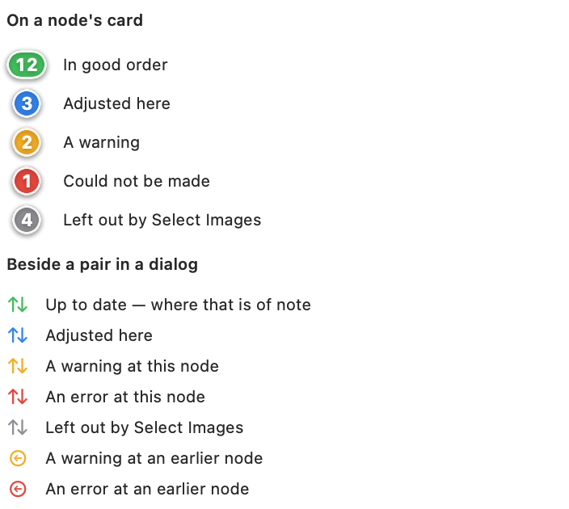

Every node but Staging bears upon its card a cluster of badges, counting the pairs that reach it; and in every dialog, each pair in the list bears a mark beside its name. Both speak in the same five colours.

The badges upon a node's card, and the marks beside a pair in a dialog's list — here Stereo Align's symbol, each node showing its own.
The badges
Green — pairs in good order.
Blue — pairs in good order that have been given an adjustment of their own at this node: an exposure, a level, a crop. It is an optional adjustment rather than a fault, and is counted at this node only.
Amber — pairs bearing a warning: a pair not yet aligned, for instance, or an adjustment set before something earlier in the workflow was altered.
Red — pairs that could not be made: a file that cannot be read, or a twin file whose fellow has not been staged.
Grey — pairs a Select Images node leaves out.
Each pair is counted once, by the gravest thing said of it; the badges are never a running total. A pair amber or red at one node is so at every node after it.
The badges count only what has been done. A loader counts a capture once its files have been examined; RAW Develop, and every node after it, counts a pair once it has been developed. It will therefore be found that, after files are staged, the badges fill in by degrees as the work proceeds in the background.
The node's icon takes the colour of the gravest of its badges: red before amber, amber before blue, blue before green.
The marks
Beside each pair in a dialog's list stand up to two marks.
The node's own symbol appears only where it has something to say: amber or red for a warning or error of this node's own, whose words are its tooltip and are given in full above the preview; grey for a pair left out; blue for a pair adjusted here; and green only where being up to date is itself of note — a pair measured, captioned or surveyed. Otherwise its place is kept, empty, so that the marks align down the list.
The upstream mark, a back-arrow in amber or red, shows that a node earlier in the pair's route has a warning or error for it. The ‹ arrow at the head of the dialog follows the pair's route back towards it.